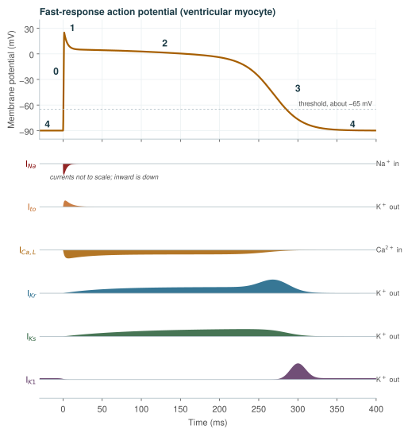
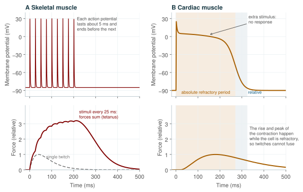
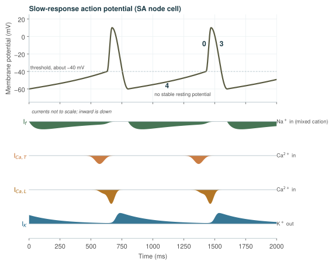
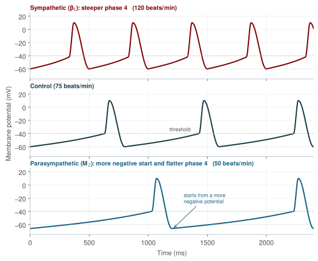
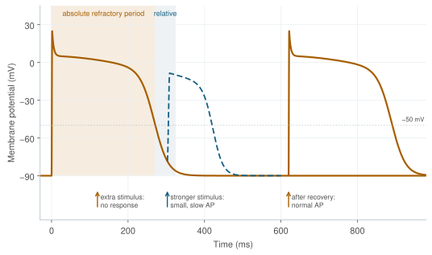
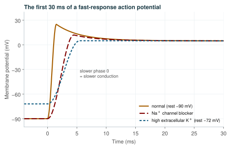

11 EKG I: Ionic Basis
Cardiac action potentials, automaticity and refractoriness
- Name the phases of the fast-response action potential and the current that dominates each one.
- Explain why the cardiac action potential lasts about 300 ms and why the heart cannot be tetanized.
- Describe the slow-response action potential of the SA and AV nodes, and the currents that drive its phase 4 depolarization.
- Explain automaticity, and how sympathetic and parasympathetic input change the rate at which the SA node fires.
- Define the absolute and relative refractory periods and the channel events behind them.
- Predict how a Na⁺ channel blocker, an L-type Ca²⁺ channel blocker, or a high extracellular K⁺ changes the upstroke, conduction and the ECG.
Names, dates and the exact values in figure captions are context, not things to memorize.
This is the first of three lectures that take you from ion channels to the clinical electrocardiogram. This one stays inside single cells: which channels open, in what order, and what that does to the membrane potential. The next chapter, ECG II: Vectors and Mean Electrical Axis, follows the wave of depolarization through the heart and onto the body surface, and EKG III: Clinical Interpretation reads real tracings. The course titles spell the recording both ways, EKG and ECG. This book writes ECG.
Keep one warning in mind from the start: the ECG is not an action potential. An action potential is the voltage across one cell’s membrane, recorded with an electrode inside the cell. The ECG records small voltage differences between points on the skin, made by the whole heart at once. The shapes look a little alike, and that is where the confusion starts. The second chapter explains how one turns into the other.
The membrane-potential basics (equilibrium potentials, the Nernst equation, voltage-gated channels) are in Membrane Potentials and Excitable Cells, and excitation-contraction coupling is in Cardiac Muscle. This chapter uses both.
11.1 Three kinds of action potential
The lecture starts by setting three action potentials side by side.
- Skeletal muscle. A fast upstroke and a fast return, all over in 3 to 5 ms. There is no plateau.
- Fast-response action potential. Found in atrial and ventricular muscle and in the His-Purkinje conduction system. The upstroke is fast, like skeletal muscle, but the cell then holds near 0 mV for 200 ms or more before it repolarizes. The whole action potential lasts about 250 to 300 ms.
- Slow-response action potential. Found in the pacemaker cells of the sinoatrial (SA) and atrioventricular (AV) nodes. The upstroke is slow, there is no true plateau, and the cell never sits at a stable resting potential. Between beats it drifts upward on its own until it fires again.
The slides call these the fast and slow cardiac APs. The difference in their upstrokes comes from which ion carries the inward current: Na⁺ in fast-response cells, Ca²⁺ in slow-response cells. Most of the rest of the chapter follows from that.
11.2 The fast-response action potential
Figure 11.1 shows a ventricular action potential with the main currents underneath it. By convention, inward current (positive charge entering the cell, which depolarizes it) is drawn downward, and outward current upward.

Phase 4, rest. Between beats the cell sits at about −90 mV, close to the K⁺ equilibrium potential. It is held there by the inward rectifier K⁺ current, IK1. The membrane at rest is far more permeable to K⁺ than to anything else, so the membrane potential stays near EK. A small inward leak of Na⁺ keeps it slightly less negative than EK itself. The Na⁺/K⁺-ATPase, a pump that moves 3 Na⁺ out and 2 K⁺ in for each ATP, restores the gradients that each beat runs down.
Phase 0, rapid depolarization. When a neighboring cell’s current depolarizes the membrane past threshold, about −65 mV, voltage-gated Na⁺ channels open. Na⁺ rushes in, driven both by its concentration gradient and by the negative inside of the cell, and the membrane swings from −90 mV to a peak above 0 (about +20 mV) in 1 to 2 ms. This inward Na⁺ current, INa, is the largest current the cell carries, but it is brief. Within a millisecond or two the Na⁺ channels inactivate, and they stay inactivated until the cell repolarizes.
Phase 1, early partial repolarization. The transient outward K⁺ current, Ito, opens with depolarization and inactivates within a few milliseconds. K⁺ leaving the cell pulls the peak back toward 0 mV and makes the small notch at the top of the action potential.
Phase 2, the plateau. For 200 ms or more the membrane potential stays near 0 mV. This is the phase that makes cardiac muscle different. The membrane potential hardly changes because inward and outward currents are almost equal:
- Inward: Ca²⁺ through L-type (“long-lasting”) Ca²⁺ channels, ICa,L. These channels respond to the depolarization of phase 0 but open slowly, so their current builds late in phase 0 and carries the plateau. The Ca²⁺ that enters here is the trigger for contraction (see the excitation-contraction coupling section below). L-type channels are the target of the Ca²⁺ channel blockers.
- Outward: K⁺ through the delayed rectifier channels. They open slowly during the plateau, so their current starts small and grows.
Phase 3, repolarization. As the L-type channels inactivate and the delayed rectifier K⁺ channels open further, the outward current wins and the membrane repolarizes. There are two delayed rectifier currents, a rapid one (IKr) and a slow one (IKs). Late in phase 3, once the membrane is negative enough, IK1 comes back and finishes the job, pulling the cell back to −90 mV.
| Phase | What happens | Main current | Ion and direction |
|---|---|---|---|
| 4 | Stable rest near −90 mV | IK1 (inward rectifier) | K⁺ out |
| 0 | Rapid upstroke from threshold (about −65 mV) | INa | Na⁺ in |
| 1 | Early notch | Ito | K⁺ out |
| 2 | Plateau near 0 mV for 200 ms or more | ICa,L against delayed rectifier K⁺ | Ca²⁺ in, K⁺ out |
| 3 | Repolarization | IKr and IKs, then IK1 | K⁺ out |
The slide figures show the resting potential as −96 mV and the peak as +52 mV. The peer-educator notes give −90 mV and +20 mV. These are the same action potential drawn from different sources; any value near EK for rest and somewhat above 0 for the peak is right.
hERG carries IKr and KCNQ1 (also called KvLQT1) carries IKs; inherited defects in either lengthen the QT interval.
The phase 4 notes call the Na⁺/K⁺-ATPase an “exchanger” and say excess Ca²⁺ leaves by “an ATP-driven Ca pump.” The Na⁺/K⁺-ATPase is a pump. Most of the Ca²⁺ that leaves the cell goes out by the Na⁺/Ca²⁺ exchanger (NCX), as the calcium-cycling slide shows (28%); the sarcolemmal Ca²⁺ pump moves only a small fraction.
11.2.1 The forces on each ion
The lecture walks through the same phases in terms of the two forces on each ion, its concentration gradient and the electrical gradient. The pattern is easier to remember than the slide animations:
- Phase 0. Na⁺ is at high concentration outside and the inside of the cell is negative, so both forces push Na⁺ in. That is why the current is so large and the upstroke so fast.
- Phase 1 and 3. K⁺ is at high concentration inside. Whenever the membrane potential is above EK (about −94 mV), the net force on K⁺ is outward, and K⁺ leaves through any open K⁺ channel. That outward current repolarizes the cell.
- Phase 2. During the plateau the inside of the cell is slightly positive, so the electrical force pushes both Ca²⁺ and K⁺ outward, though only weakly. Ca²⁺ still enters, because its concentration outside is about ten thousand times its concentration inside, and K⁺ leaves down its own concentration gradient. The two currents roughly cancel.
- Phase 4. At rest the membrane sits just positive to EK, where the chemical and electrical forces on K⁺ nearly balance.
11.2.2 Why the inward rectifier matters
IK1 is called an inward rectifier because it passes current much more easily into the cell than out of it. In practice its conductance is large near the resting potential, which clamps the cell close to EK (the net current there is small, because the membrane is already near EK), and very small once the cell is depolarized. During the plateau, IK1 channels pass almost no outward current. If they did, the plateau would need a much larger inward current to hold the membrane near 0, and it would cost the cell far more ion movement. Slow-response cells have almost no IK1, which is one reason they have no stable resting potential.
11.3 Three differences between cardiac and skeletal muscle
The lecture names three:
- The plateau. A cardiac action potential lasts about 300 ms; a skeletal muscle action potential lasts about 5 ms. The long cardiac action potential means the cell stays refractory through most of its own contraction, so twitches cannot fuse and the heart cannot be tetanized.
- Cell-to-cell conduction. Cardiac action potentials spread directly from one cell to the next through gap junctions. Every skeletal muscle fiber needs its own motor neuron and neuromuscular junction.
- Automaticity. Some cardiac cells fire on their own, with no outside trigger.
Figure 11.2 shows the first difference.

In tetanus, force sums. Action potentials do not. Each skeletal muscle action potential is an all-or-none event that is over in a few milliseconds, and the next one is the same size. What adds up is the Ca²⁺ released and the force of the overlapping twitches. Cardiac muscle cannot do this because its action potential, and so its refractory period, lasts almost as long as the twitch.
11.4 Excitation-contraction coupling, briefly
The action potential exists to make the heart contract. The steps, which the Cardiac Muscle chapter covers in detail, are:
- The action potential spreads down the T-tubules.
- L-type Ca²⁺ channels open during the plateau. This Ca²⁺ entry from outside the cell is required. Without extracellular Ca²⁺ the heart does not contract.
- The entering Ca²⁺ opens ryanodine receptors (RyR2) in the sarcoplasmic reticulum, which release a much larger amount of Ca²⁺: calcium-induced calcium release.
- Ca²⁺ binds troponin C, tropomyosin moves off the myosin-binding sites on actin, and the cell contracts (systole).
- To relax (diastole), Ca²⁺ is removed from the cytosol. About 70% goes back into the sarcoplasmic reticulum through SERCA2a, about 28% leaves the cell through NCX, and the last 1 to 2% goes through the sarcolemmal Ca²⁺-ATPase and into the mitochondria.
The sarcoplasmic reticulum’s Ca²⁺ triggers contraction. It does not depolarize the cell; Na⁺ entry does that, and the plateau is carried by Ca²⁺ entering across the sarcolemma.
11.5 The slow-response action potential
Figure 11.3 shows two beats from an SA node cell. Only phases 4, 0 and 3 are labeled. There is no phase 1 notch, and the brief, sloping top of the action potential blends phase 2 into phase 3.

Phase 4, spontaneous depolarization. The most negative point, the maximum diastolic potential, is about −60 mV, well above EK. From there the membrane depolarizes on its own. Three things push it up:
- The funny current, If. It is “funny” because, unlike most voltage-gated channels, its channels open when the membrane hyperpolarizes at the end of phase 3. The channels are HCN channels, mainly HCN4 in the SA node. If is a mixed cation current, carried mainly by inward Na⁺ at diastolic potentials. It starts the slope of phase 4.
- T-type (“transient”) Ca²⁺ channels open at fairly negative potentials, so their current builds in the second half of phase 4 and carries the membrane toward the L-type threshold.
- L-type Ca²⁺ channels begin to open at the end of phase 4.
At the same time the outward K⁺ current left over from phase 3 is dying away, which also lets the membrane depolarize.
Phase 0, the upstroke. At about −40 mV enough L-type Ca²⁺ channels open to fire the cell. Slow-response cells have few working Na⁺ channels, and at a membrane potential this positive most of those would be inactivated anyway. So the upstroke is carried by Ca²⁺ through L-type channels, which open more slowly and carry less current than Na⁺ channels. The upstroke is slow and the peak is low, near +10 mV.
Phase 3, repolarization. Delayed rectifier K⁺ current repolarizes the cell, more slowly than in a fast-response cell. Because there is almost no IK1 to clamp the membrane at EK, it never settles at a resting potential, and phase 4 begins again at once.
| Fast-response | Slow-response | |
|---|---|---|
| Where | Atrial and ventricular muscle, His-Purkinje system | SA node, AV node |
| Phase 4 | Stable, about −90 mV, held by IK1 | Drifts upward from about −60 mV; If, then T- and L-type Ca²⁺ current |
| Threshold | About −65 mV | About −40 mV |
| Phase 0 current | INa | ICa,L |
| Upstroke | Very fast | Slow |
| Plateau | Long (200 ms or more) | None to speak of |
| Conduction | Fast (about 0.3 to 1 m/s in muscle, up to 4 m/s in Purkinje fibers) | Slow (about 0.05 m/s) |
What the two share: both depend on L-type Ca²⁺ channels (for the plateau in one, the upstroke in the other), and both repolarize through delayed rectifier K⁺ channels.
One slow-response slide credits phase 0 to T-type Ca²⁺ channels; the next slide, the summary slide and the peer-educator notes credit L-type channels. Phase 0 of the slow-response action potential is carried by L-type Ca²⁺ current. T-type current helps late in phase 4.
The slides and notes say the funny current flows through “HCN1” channels. The main isoform in the SA node is HCN4. The peer-educator notes call If “Na⁺ leak + T-type Ca²⁺.” T-type Ca²⁺ current is a separate current through separate channels.
The AV node is a slow-response tissue, so its action potentials, and conduction through it, depend on L-type Ca²⁺ current, not on Na⁺ current. That is why L-type Ca²⁺ channel blockers slow conduction through the AV node and lengthen the PR interval. Na⁺ channel blockers do not act on the AV node. They act on fast-response tissue: they slow phase 0 in the His-Purkinje system and ventricular muscle and widen the QRS. They do not slow the heart rate, because the SA node does not use Na⁺ channels to fire.
11.6 Automaticity
Automaticity is the ability of a cell to fire without an outside trigger. Any cell with a phase 4 that drifts up to threshold has it. The cells that do this best sit in a hierarchy:
| Pacemaker | Rate when it sets the rhythm (per minute) |
|---|---|
| SA node | 60 to 100 at rest (the normal resting sinus rate) |
| AV node | 40 to 60 |
| Purkinje fibers | about 30 to 40 |
The SA node normally wins because its phase 4 reaches threshold first. Each sinus beat spreads through the rest of the heart and fires the slower pacemakers before they get there, so they never get to set the rate. They are latent pacemakers. If the SA node fails, or its impulse is blocked, the fastest remaining pacemaker takes over and produces an escape rhythm. The Purkinje fibers are the main site of ventricular escape pacemakers. Ordinary atrial or ventricular muscle can also acquire automaticity when it is diseased, and then it can fire early, producing extra beats. Escape rhythms and early beats are the subject of the third chapter.
11.6.1 How the autonomic nervous system changes the rate
With no autonomic input at all, as in a transplanted heart, the SA node fires at its intrinsic rate, about 100 per minute. At rest it is held below that by parasympathetic (vagal) tone, which is why the normal resting sinus rate is 60 to 100. Sympathetic nerves and circulating catecholamines speed it up. Both act by changing how long phase 4 takes to reach threshold (Figure 11.4).

Sympathetic (β1-adrenergic). Norepinephrine from sympathetic nerves, or epinephrine from the adrenal medulla, binds β1 receptors on SA node cells. The receptor raises cAMP. cAMP binds HCN channels directly and makes them open at less negative potentials, so If is larger and the phase 4 slope steeper. β1 stimulation also increases L-type Ca²⁺ current, which shifts the firing threshold slightly more negative. Threshold comes sooner and the rate rises.
Parasympathetic (M2-muscarinic). Acetylcholine from the vagus binds M2 receptors. It has two separate effects that happen at the same time:
- It opens a set of K⁺ channels, so K⁺ conductance rises and the membrane moves toward EK. Each cycle starts from a more negative potential.
- It lowers cAMP, which reduces If and flattens the phase 4 slope.
Both lengthen the time to threshold, and the rate falls. The two effects run in parallel from the same receptor. The rise in K⁺ conductance does not cause the fall in cAMP.
The same receptors act on the AV node: sympathetic input speeds conduction through it and parasympathetic input slows it. In the ECG, that shows up in the PR interval. The ANS and Extrinsic Control chapter covers the reflexes that set this autonomic balance.
β1 steepens and M2 flattens the If slope. M2 also hyperpolarizes the cell through K⁺ channels. Everything that changes the sinus rate in the next two chapters works through the slope of phase 4, the potential it starts from, or the threshold it has to reach.
11.7 Refractory periods
The action potentials so far have waited politely for the cell to finish before the next stimulus came. What happens when a stimulus arrives early? Figure 11.5 shows the answer.

Absolute refractory period (the slides write “absolute (effective)”). From the upstroke until about halfway through phase 3 (the membrane back to about −50 mV), the cell cannot fire another action potential, however strong the stimulus. The reason is the Na⁺ channels. After they open in phase 0 they inactivate, and an inactivated channel cannot open again until the membrane repolarizes and gives it time to recover. Until enough channels have recovered, there is not enough inward current to make a new upstroke.
The absolute refractory period does two things for the heart. It prevents summation of action potentials, and so prevents tetanus. And it guarantees a period of relaxation, which is when the heart fills (diastole).
Separately from any outside stimulus, L-type Ca²⁺ channels can sometimes reopen on their own during the plateau or phase 3 and make a slow upstroke. This can set off an extra beat (the slide lists PACs and PVCs). It is most likely when the action potential is long, which is why a long QT is dangerous (see EKG III).
Relative refractory period. From about mid-phase 3 into early phase 4, the cell can fire, but only if the stimulus is stronger than normal. Some Na⁺ channels have recovered, but not all, so the upstroke is slower and the action potential smaller. Meanwhile the delayed rectifier K⁺ channels are still open and closing over time, and the extra K⁺ conductance opposes depolarization until it fades.
Both cell types have refractory periods, but they come from different channels: Na⁺ channel recovery in fast-response cells, and Ca²⁺ channel recovery in slow-response cells.
11.8 Upstroke speed, resting potential and conduction
How fast an action potential spreads from cell to cell depends on how fast its upstroke is. A steep phase 0 pushes a large current into the next cell and brings it to threshold quickly. That one rule explains several clinical effects the lecture uses (Figure 11.6).

- Na⁺ channel blockers reduce INa. Phase 0 is slower in atrial and ventricular muscle and in the His-Purkinje system, so the wave of depolarization takes longer to cross the ventricles and the QRS complex widens.
- L-type Ca²⁺ channel blockers reduce the current that carries phase 0 in the SA and AV nodes. Conduction through the AV node slows and the PR interval lengthens. They also slow the SA node.
- High extracellular K⁺ (hyperkalemia) or ischemia partly depolarizes the resting membrane. A less negative resting potential leaves more Na⁺ channels inactivated before the beat begins, so fewer are available for phase 0. The upstroke is slower and smaller, conduction slows, the QRS widens, and the tissue is prone to arrhythmias. Hyperkalemia also slows the SA node and can cause sinus bradycardia.
Hyperkalemia means a high K⁺ in the extracellular fluid. Raising extracellular K⁺ shrinks the K⁺ gradient across the membrane, so EK becomes less negative and the resting potential moves up, toward 0. (Raising intracellular K⁺ would do the opposite, but that is not what happens in disease.) “Less negative” is the direction to remember: the cell is partly depolarized, and its Na⁺ channels pay for it.
11.9 Check your understanding
Suppose a ventricular cell had no IK1 channels at all. What would happen to its resting membrane potential, and what would that do to its next upstroke?
Answer
The resting potential would become less negative. IK1 is what makes the resting membrane far more permeable to K⁺ than to anything else, so it holds the cell near EK. Without it, the small inward leak of Na⁺ has a larger effect and the membrane drifts up from −90 mV. More Na⁺ channels would then be inactivated before the beat, so the next upstroke would be slower and smaller. (Slow-response cells, which have almost no IK1, never settle at a resting potential for a related reason.)
The AV node conducts at about 0.05 m/s and the His bundle, a few millimeters away, at about 1 m/s. What difference in their action potentials explains most of this, and why does the slow AV node help the heart pump?
Answer
AV node cells are slow-response cells. Their upstroke is carried by L-type Ca²⁺ current, which is smaller and slower to turn on than the Na⁺ current that carries phase 0 in the His bundle, so each AV node cell brings its neighbor to threshold more slowly. (Their small fibers add resistance as well.) The delay holds the ventricles back until the atria have finished contracting and topped up ventricular filling.
A patient has sinus bradycardia from high vagal tone, and atropine blocks the muscarinic receptors on the SA node. Which two changes in the SA node action potential raise the rate?
Answer
With the M2 receptors blocked, the extra K⁺ conductance that acetylcholine opened goes away, so each cycle starts from a less negative maximum diastolic potential, closer to threshold. And cAMP is no longer held down, so If is larger and the phase 4 slope steeper. Both shorten the time to threshold.
Explain, step by step, why a less negative resting potential slows conduction in ventricular muscle even though the Na⁺ channels themselves are normal.
Answer
At a less negative resting potential, more Na⁺ channels sit in the inactivated state before the beat begins. Fewer are available to open in phase 0, so INa is smaller and the upstroke slower and lower. A slower upstroke drives less current into the next cell, which takes longer to reach threshold, so the wave of depolarization moves more slowly. Hyperkalemia and ischemia do this.
An extra stimulus reaches a ventricular cell 150 ms after its upstroke. What happens, and what is the channel explanation?
Answer
Nothing: at 150 ms the cell is in its plateau, inside the absolute refractory period. Its Na⁺ channels inactivated during phase 0 and cannot recover until the membrane has repolarized, so there is no current to make a new upstroke.
11.10 Sources
This chapter follows the 2026 EKG I: Ionic Basis lecture for MEDC 30504 (the 2024 deck with speaker notes) and draws on the peer-educator notes and the course’s 2018 electrophysiology notes, corrected and updated. All figures were drawn for this book.